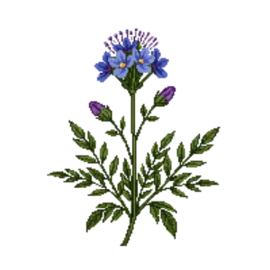

Blue Mistflower
Conoclinium coelestinum

Blue Mistflower is a perennial for groundcover, mid-border, suited to full sun to partial shade and loam or moist ground, flowering Aug, Sep, Oct.
| Type | Perennial |
|---|---|
| Mature height | 75 cm |
| Spread | 75 cm |
| Aspect | full sun to partial shade |
| Foliage | Deciduous |
| Hardiness | USDA 5a-10b |
| Pollinator-friendly | Yes |
| Pet-safe | Not confirmed |
Where to use it in a border
At around 75 cm, it sits best along the front edge, where a low, spreading habit reads best. Give it about 75 cm of room to spread. It is hardy across USDA zones 5a to 10b, so check it suits your area before planting.
It appears in our lists of full sun, wet soil, pollinator-friendly plants.
Flowering through the year
Worth knowing
- It copes with ground that stays wet, which most border plants will not.
- Its flowers are valued by bees and other pollinators.
Good companions
Plants that share its conditions and style, chosen to complement its place in the border:
- Cardinal Flowerto flower when it does not
- Common Blue Violetto edge in front
- Golden Ragwortto edge in front
- Red Columbineto edge in front
- Snake's Head Fritillaryto edge in front
- Wild Daffodilto edge in front
Garden styles
Meadow Native Wildlife garden Woodland
See Blue Mistflower set in a full border, with spacing and companions worked out for your own conditions, in Border Builder.
Sources
Bloom timing and hardiness drawn from:
- Lady Bird Johnson Wildflower Center (wildflower.org, 2026-05)
- MoBot Plant Finder (missouribotanicalgarden.org, 2026-05)
- NC State Extension (plants.ces.ncsu.edu, 2026-05)